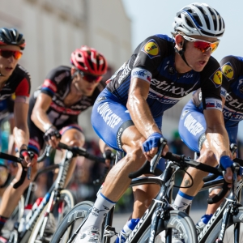
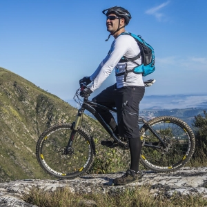

Adventure Tours
Downtown Bozeman Street Tour

- Skill Level: Beginner
- Distance: 8 miles
- Conditions: Streets, Mostly Flat, Faster Speeds, Country Roads
- Estimated Time: 2 Hours
- Location: Downtown Bozeman
- Cost: $5/ea.
This fast paced tour takes you around the city of Bozeman and then spirals into downtown Bozeman where you can hop off your bicycle and relax at Bozeman Central Park.
Mount Bozeman Tour

- Skill Level: Intermediate
- Distance: 7 miles
- Conditions: Uphill/Downhill, Bumpy, Potentially Muddy
- Estimated Time: 5 Hours
- Location: Mount Bozeman
- Cost: $15/ea.
This rugged adventure will take you up the swichbacks of Mount Bozeman to a breathtaking view of the valley and small town below. You'll put your mountain biking skills to the test on this exciting ride. Better do a break test before joining us on this tour.